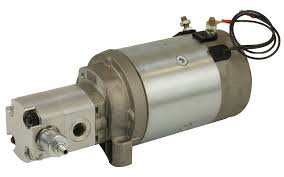
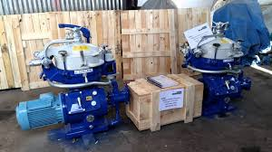
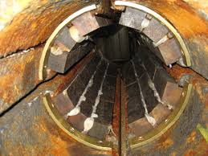
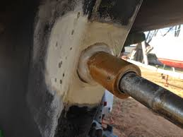
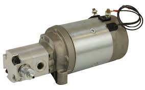
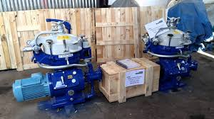
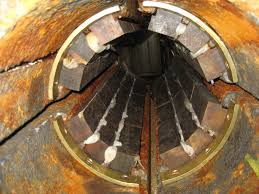
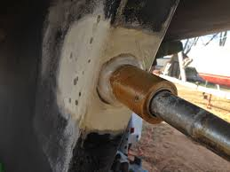

Welcome on Karen Marine Global Trading Company's website
Karen Marine co started His Activities As A Trading And Engineering Company Since and at Present With The Implementation Of Quality
management system succeed
to achieve ISO 9001. Furthermore Our Main Goals Aim spare part procurement, repair, design & Produce.